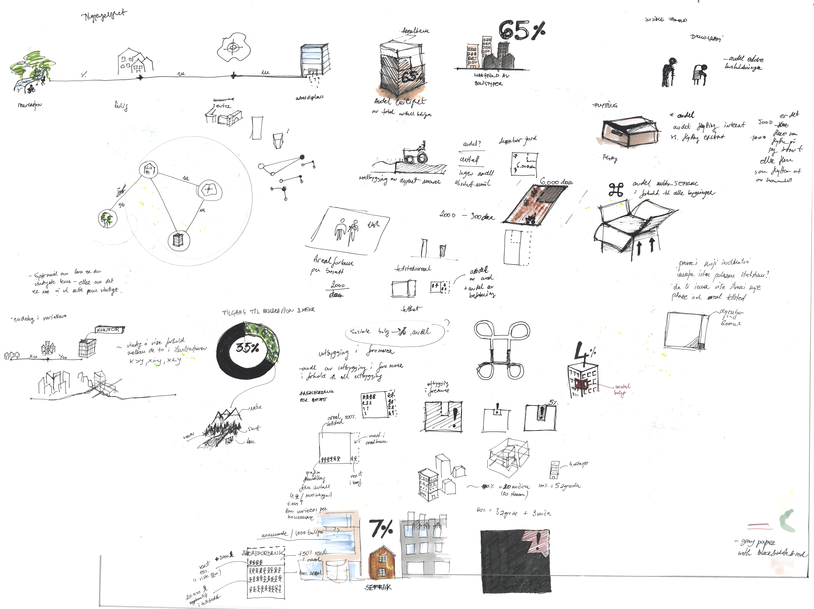

Land use profiles
as an instrument in municipal land use planning
The assessment of the use of Land Use Profiles, as well as suggestions for how these might be formed, was commissioned by Ministry of Local Government and Regional Development from Rambøll AS, where I used to work. I was part of the team working on this document. My task was to come up with a scenario where and how these profiles could be used, make a proposal for visual representation for the profiles, both for the individual indicators, as well as for the posters / sheets / web-based solutions.

Document / Report

Illustration

Icon Set
Assessing the tool
The mail goal of the project was to assess the need and usefulness of investing in development of land use profiles as a tool in municipal land use planning. One part of the project was the assessment of possible visualization and use of such in different mediums.
The land use profiles as a tool were assessed, as well as types of indicators that could be relevant for such a tool. The assessment was made through interviews with municipal planners who are the target users of the profiles, recommendations for relevant indicators based on data available to the municipalities and those of relevance for land use planning.
Where to start?
The project brief was very loose when it comes to visual representation of the profiles, and the first part of my job was, and this is not very unusual, to define my own project scope. I started with some meeting with the project team, and decided that the discussions we had during this time were to be the part of the report - as this project was just an assessment, and the discussion we had could be a useful input for the team who is going to implement the project. The discussions were very broad, starting with the medium - are the profiles to be distributed as print, or as a web-based solution; whether the profile for one municipality should depict change in the indicators from one state to another, or the visualization should enable comparison between different municipalities. in Norway municipalities differ substantially in size, and difference between the largest and smallest can be up to 3000 times when it comes to visualization, as well as 1500 times bigger when it comes to area of the municipality
As these answers were not to be answered during the lifetime of the project, I have started to test several ways of depicting the indicators and the change in the indicators, starting with a sketch to help me understand what the indicators actually were to measure, and how the change is measured for each.
How to depict the change in the indicators?
An exploration on how the illustrations would work if the basic function or goal for indicators was to show the change through time.
Indicator measures ratio of housing units built as apartment buildings in all housing. This is an important measure in a country with expensive housing, where it is hard for young people to own housing. The municipality can than make policies based on this indicator. The main change indicator is the number, but it is also visually shown how either houses or apartment buildings dominate the cityscape.
Building in zones that are marked as danger-zones is not as uncommon as it should be. This indicator would show percentage of the area that is potentially at risk, and would also be an indication of how costly it would be to build in these areas.
Farmland preservation is a natural goal, and a negative indicator would indicate that the farmland is in danger in this municipality.
The expected age wave is coming, and the ration of housing where elderly live is an important aspect to be considered in the municipal planning. Most of the municipalities focus on families with children, elderly being a somewhat neglected group in housing strategies.
The indicator shows number of social housing units per 1000 inhabitants. This number is usually quite low in Norway, as the strategy is to get people to buy housing.
The percentage of inhabitants that have a safe and quick access to recreational areas in the cities.
Indicator is an index measuring how much more land is used with population growth. It measures how much more land per inhabitant is being used now than before, and it is basically a measure of sprawl.
The average distance from housing to the center of the municipality. the change is shown by increasing/decreasing distance in the visual representation, and the change is measured during a specific time frame.
Number of movers in the municipality. If there are no or few movers internally in the municipality, this is an indicator of low housing market differentiation.
Percentage of protected buildings among the overall building stock.
Publish Land Use Profiles as a flyer?
The indicators are divided into those concerning accessibility/mobility, land use and social conditions. Each of these topics is shown on a different sheet. The booklet would not show change, but current data.
Indicators related to eachother
If the indicators are measured as indexes, and both positive and negative indexes is consecutively measured for all indicators, one could depict an axis which would give an indication of how these indexes compare to one another, and potential interdependences.